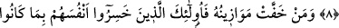
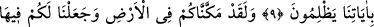
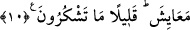

KIYAMET GÜNÜ
AMELLERİN TARTILMASI
8. O gün tartı haktır. Kimin (sevap) tartıları ağır gelirse, işte onlar kurtuluşa
erenlerdir.
9. Kimin de tartıları hafif gelirse, işte onlar, ayetlerimize karşı haksızlık
ettiklerinden dolayı kendilerini ziyana sokanlardır.
10. Doğrusu biz sizi yeryüzüne yerleştirdik ve orada size geçim vasıtaları verdik.
Ne kadar da az şükrediyorsunuz!
“O gün” kıyamet gününde “tartı tam doğrudur.”
Buradaki “tartı” dan maksad, amellerin ölçülmesidir. Ağır olanların hafif olanından,
iyi amellerin kötü olanlarından ayrılmasıdır.
“Kimin (sevap) tartıları ağır gelirse işte onlar kurtulanlardır” kurtuluşa ve sevaba
nail olanlardır.
“Tartıları” diye ifade ettiğimiz, “Mevazin”, “mevzun” un çoğuludur. Ancak, tartılan
şeylerin farklı farklı olması ve ölçülerin de bir çok çeşitleri olması bakımından
“mevazin” kelimesinin “mizan” kelimesinin çoğulu olması da caizdir.
et-Te’vîlâtü’n-Necmiyye’de şöyle denilmiştir: Ayette “tartıları” kelimesi çoğul olarak
kullanılmıştır. Çünkü her kul için bütün davranışlarına göre ayrı ayrı adaletli teraziler
konulur. Bedeninin vasıflarını ölçmek için bir terazi, ruhunun sıfatlarını ölçmek için bir
terazi, sırrının hallerini ölçmek için bir terazi, hafîsinin ahlakını ölçmek için başka bir
terazi vardır. Hafî, rabbânî ahlakın feyzini kabul etme kâbiliyeti olan ruhanî bir latifedir.
Bu yüzdendir ki Rasûlullah (a.s.): “Mizana, güzel ahlaktan daha ağır bir şey
konulmamıştır.”[2] buyurmuştur. Çünkü esas itibariyle güzel ahlak, yaratılmışların
sıfatlarından değildir. Bilakis o, âlemlerin Rabb’inin ahlakıdır. Kullar ise O’nun ahlakı
ile ahlaklanmakla emrolunmuşlardır.